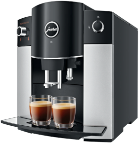

Esspresso machine BOT

Image source: JURA Inc. (https://us.jura.com/)
Features & Changes
- Features
- This interface is for the automatic espresso machine. The user can brew 3 types of coffee by its voice command. If user just say “brew coffee”, the interface will let user know the exact type of coffee should be specified. When user want to know more information of the commands, I prepared the help command triggered by “How to use”.
- Changes
- I tested with two participants for this interface. For these experiments, I prepared the flowchart and brief responses in advance. I focus to act like a real speech interface, so it sometimes frustrated the user. After the first phase of the test for each participants, I added some instant response on the flowchart to cover unexpected queries and restart the test whether it can satisfy the user’s command.
- After the first experiment, I realized that I only focused on the types of coffee. The user wanted an iced coffee or a cafe latte with extra shot. Since the target machine only supports the limited types of coffee, I should add handling steps for these requests. After the experiment, the user hoped that it would be better if this interface offer categorized commands. She doesn’t wanted to wait for a long sentence, and she expected that the interface works like an step-by-step ARS system. I applied this idea on the flowchart to decrease the length of the sentence.
- In the second experiment, the user wanted to add syrups on the coffee. I added the handling scenario later. Moreover, when the machine informed that there is only few water in the machine, the user wanted to know how to refill water on the tank. Except some unexpected cases, the entire scenario was more smooth than the first experiment.